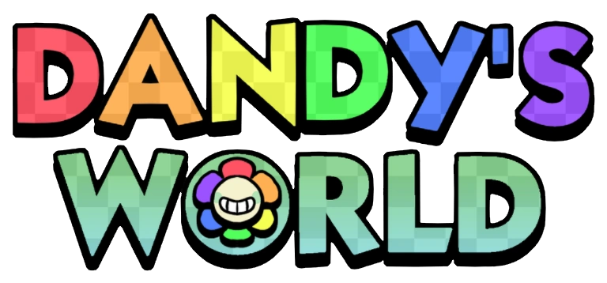
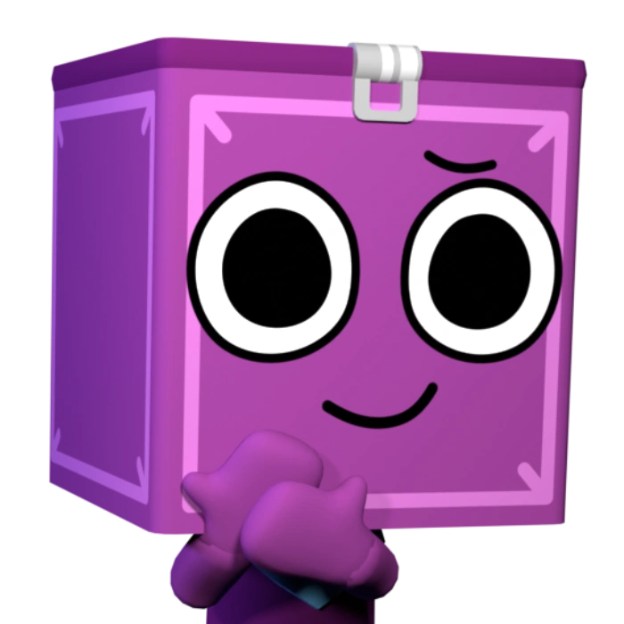
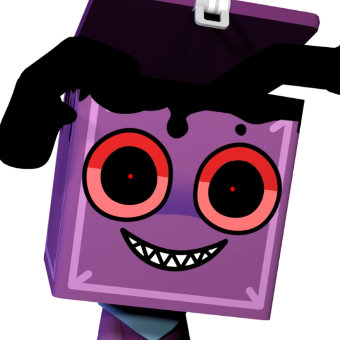

Una página web de Juan José Sánchez

Dandy's World es un videojuego del género mascot horror desarrollado por el equipo de desarrollo independiente de la plataforma y motor gráfico de Roblox: BlushCrunch Studio. El juego se sostiene a partir de una mecánica simple: Tu, el jugador, tienes el rol de llenar una serie de máquinas las cuales contienen Ichor (un líquido negro de origen desconocido cuya motivación de extracción sigue manteniéndose como una incógnita) para poder seguir avanzando a través de los pisos que contiene el Gardenview (lugar dónde se desarrollan los eventos del juego) mientras, en paralelo, evitas a los Twisted (versiones retorcidas de los personaje jugables) que son capaces de quitarte la vida. A medida que se vas avanzando, la dificultad aumenta considerablemente, con aspectos como el número de máquinas que toca llenar y también la cantidad de enemigos presentes dentro de los pisos. El juego se puede realizar tanto de forma individual como en equipo, con una cantidad máxima de 8 jugadores por partida, y el número de jugadores dentro de la partida también afecta en gran parte el juego, ya que aumenta con mayor velocidad la cantidad de máquinas que debes llenar y el número de Twisteds que se encuentran de forma simultanea dentro del piso.
 |
 |
| Toon | Twisted |
| El Toon es el término de referencia para los personajes jugables. Su apariencia está inspirada en un colorido personaje de dibujo animado y cada toon tiene sus propias habilidades que en esencia los vuelve únicos. Cada toon maneja sus propias estadísticas las cuales brinda equilibrio a la hora de jugar, algunos son buenos distractores, otros son buenos estractores de las máquinas y otros sirven como soporte para los demás jugadores. | El Twisted es la versión corrompida y retorcida de los personajes jugables. Caracterizados por tener manchas de Ichor en su cuerpo y ojos rojos, tienen el rol de ashechar a los jugadores y atacarlos. Al igual que los jugadores, cada Twisted tiene una característica que los puede voler más o menos peligrosos, ya sea su radio de detección, su velocidad o la manera en la que interactuan con el entorno. |